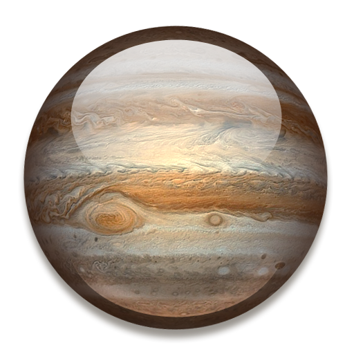
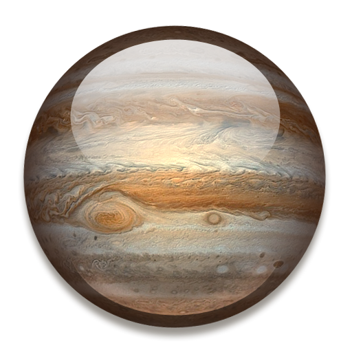

Знайомство із сонячною системою


 



Тисячі років люди вдивлялися в нічне небо. Вони помічали, як яскраві вогники рухаються по небу, і мріяли хоч щось дізнатися про них. Вивчення планет почалося давно, коли перші астрономи помітили, що п’ять зірок (планети, які можна бачити без телескопа) яскравіші за інші.

- Меркурій;
- Венера;
- Марс;
- Юпітер;
- Сатурн.
Інші планети відкрили пізніше.
Закони руху планет навколо Сонця відкрив німецький учений
9 планет, що обертаються навколо Сонця, і саме Сонце утворюють Сонячну систему.
Одна з планет Сонячної системи більша за нашу Землю в 11 разів, а інша – розміром із Місяць. Одна планета оточена кільцями льоду, а на іншій температура поверхні сягає 482 оС. У однієї планети є 21 супутник, подібний до нашого місяця, а деякі взагалі не мають супутників. Деякі тверді й кам'янисті, інші складаються з газу.
Сучасні вчені поділили планети на

- Меркурій;
- Венера;
- Земля;.
- Марс.
Остання зовнішня планета – Плутон – найбільш унікальна, оскільки вона не земна і не газоподібна.